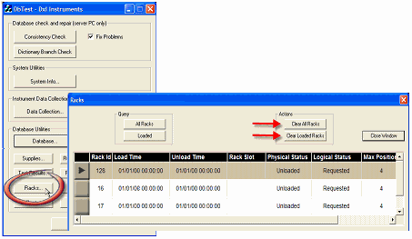
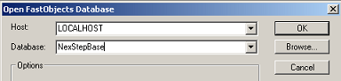
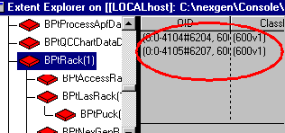
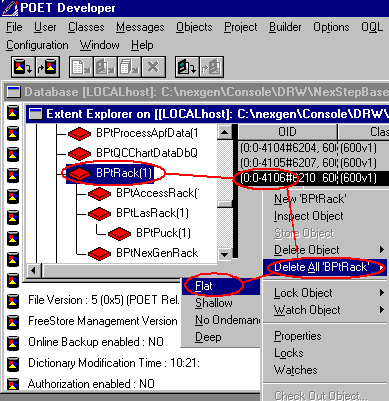
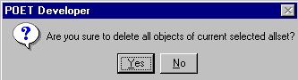
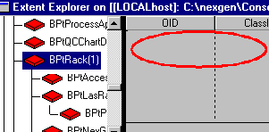
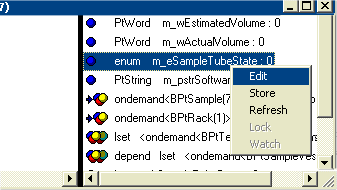
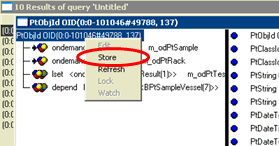

This procedure describes how to delete racks that cannot be deleted using the function buttons on the user interface.
Use this procedure to delete racks that are stuck aliquoting or requested of the sample manager. The racks might have no specific rack ID or some other issue that does not allow their deletion by the user interface function buttons.
Prepare the instrument.
Ensure that the instrument is in
Ready mode.
To remove and clear all racks from the
Sample Manager Requested screen, select each rack in the
Sample Manager Requested screen and then select
Edit Request > Cancel Request.
Remove all racks from the on-load and off-load areas. If the instrument is on LAS, remove all carriers from the hardware queue and then pause the connection unit.
Initialize the instrument with
Clean Out All for Sample Wheel Vessels - All Positions checked. If the stuck racks are deleted from the
Sample Manager screen, proceed to the Verification step.
Launch the DbTest application.
For Windows XP console PC with DxI Software 5.2 and below:
On the console PC, select
Start > Programs > NexGen or NexStep > DbTest.
In the
DbTest
window, select
Database.
Figure 401: DxI DbTest
If the
Database icon is not active, then use these steps to enable the
DevDbTest option in the registry:
Exit
DbTest.
Select
Start
> Run, and then type in
Regedit.
Navigate to
HKEY_LOCAL_MACHINE\SOFTWARE\BECKMAN\NexStep.
Right-click on
DevDbTest, select
Edit, and then change the number 0 to 1.
Open the
DbTest application.
Select
OK to the
Open Poet Database pop-up.
For Windows 8 Min PC with DxI Software 5.3.1 and above:
Note: DxI Software 5.3.1 is compatible with Windows XP console PC. If the software was installed on the Windows XP console PC, then follow the Windows XP section to launch DbTest application and enable the Database tools.
Press
Windows key, select DbTest UD icon or type
DbTest
and open the program.
In the
DbTest
window, select
Database.
Figure 402: DxI DbTest
If the
Database icon is not active, then use these steps to enable the
DevDbTest option in the registry:
Exit
DbTest.
Press
Windows
key, type
regedit, and open the Regedit program.
Navigate to
HKEY_LOCAL_MACHINE\SOFTWARE\BECKMAN\NexStep.
Right-click on
DevDbTest, select
Edit, and then change the number 0 to
1.
Open the
DbTest UD program.
Select
OK to the
Open Poet Database pop-up.
Use the DbTest application deleting racks process.
In the DbTest window, select the
Racks button, and then select
Clear All Racks > Close Window.

Inspect the user interface and confirm that the racks have been cleared.
If the racks have not been cleared, then attempt to remove them using the Poet or Fast database application for deleting racks.
Launch Poet or Fast database application.
For Windows XP console PC with DxI Software 5.2 and below:
From the
Windows Desktop on the console PC, select
Start > Programs > NexGen (or Access2) > Poet Developer or Poet Administrator.
In Poet browser, select
File > Open Database.
In the Host field, enter
LOCALHOST. In the Database field, enter
NexStepBase. Select
OK.
Note: NexStepBase is case-sensitive.
Select
Objects > Browse Extent.
For Windows 8 Mini PC with DxI Software 5.3.1 and above or Access2 Software 3.4.3 and above:
Note: DxI Software 5.3.1 is compatible with Windows XP console PC. If the software was installed on the Windows XP console PC, then follow the Windows XP section to launch Fast database application. Poet database application is replaced by Fast database application.
Press
Windows key, select
Fast Developer or
Fast Administrator icon or type
developer or
administrator and open the program.
In Fast browser, select
File > Open Database.
In the Host field, enter
LOCALHOST. In the Database field, enter
NexStepBase. Select
OK.

Note: NexStepBase is case-sensitive.
Select
Objects > Browse Extent.
Use Poet or Fast application to delete racks.
Note: Poet Developer or Administrator is functioning the same as Fast Developer or Administrator.
Identify and remove stuck racks from the database.
In the
Extent Explorer window of the
POET or
Fast database, scroll down and select
BPtRack.
The right side of the
Extent Explorer window displays text for the in-progress and requested racks.
Depending on the object id displayed in the
Extent Explorer window, perform the steps in one of these options.
If the right side of the
Extent Explorer window displays object id (OID entries):

Highlight a line of text on the right side of the screen, and then right-click and select
Delete All BPtRack
> Flat.

Select
Yes to the delete message.

Select
File > Exit > Yes to exit the POET or Fast application.
If the right side of the
Extent Explorer window does not display object ID (OID) entries:

Select
OQL > New Query from the top menu.
In the query window, type
SELECT* FROM BPtSampleTubeExtent WHERE m_eSampleTubeState < 5. The query text is case-sensitive.
Select
OQL > Execute Query to display the search results.
Note: Each result in the pop-up query window represents a sample. Each sample must be opened and edited individually.
Double-click on the first result in the query to open it.
Highlight the
enum m_eSampleTubeState
entry on the right side of the screen, and then right-click and select
Edit. Change the number to
5.

Select
OK.
Select
PTObjID (the top line on the left side of the split screen), right-click and select
Store.

When all the results or samples have been edited, close the PtObjID windows to return to the Results of query 'Untitled' window.
Close the
PtObjID windows to return to the
Results of query 'Untitled' window.
Close the
Results of query 'Untitled' window.
Close the
Untitled window and select
No.
Select
File > Exit > Yes to exit the POET or Fast application.